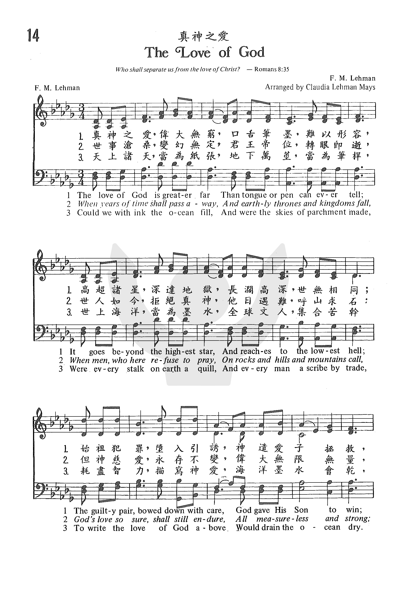

1135 真神之愛 The Love of God
|
|
【真神之愛】
詩集：世紀頌讚，68 |
|
1 The love of God is greater far
than tongue or pen can ever tell;
it goes beyond the highest star,
and reaches to the lowest hell.
The wand'ring child is reconciled
by God's beloved Son.
The aching soul again made whole,
and priceless pardon won.
Refrain:
O love of God, how rich and pure!
How measureless and strong!
It shall forevermore endure—
the saints’ and angels’ song.
2 When ancient time shall pass away,
and human thrones and kingdoms fall;
when those who here refuse to pray
on rocks and hills and mountains call;
God’s love so sure, shall still endure,
all measureless and strong;
grace will resound the whole earth round—
the saints’ and angels’ song. [Refrain]
3 Could we with ink the ocean fill,
and were the skies of parchment made;
were ev’ry stalk on earth a quill,
and ev’ryone a scribe by trade;
to write the love of God above
would drain the ocean dry;
nor could the scroll contain the whole,
though stretched from sky to sky. [Refrain]
Source: Voices
Together #162
|
真神之愛，偉大無窮，口舌筆墨，難以形容，
高超諸星，深達地獄，長闊高深，世無相同。
始姐犯罪，墮入引誘，神遣愛子拯救；
使我罪人與神和好，赦免一切罪尤。
雖當將來世界改換，帝位王權，過眼雲煙，
冥頑世人，不靠真神，末日苦難，呼石求山；
神大慈愛終不改變，廣大、堅定、純全；
向人所顯救贖恩典，天使聖徒頌揚。
縱使諸天當為紙張，地上萬莖當為筆桿，
世上海洋當為墨水，全球文人集合苦幹，
耗盡智力描寫神愛，海洋墨水會乾；
案卷雖長如天連天，豈能描述完詳。
副歌：啊！神之愛何等豐富，偉大無限無量，
永遠堅定，永遠不變，天使聖徒頌揚。
|
|

 |
|
|
http://www.hymncompanions.org/Feb/09/stream.php
真神之愛 The Love of God
真神之愛，偉大無窮，口舌筆墨，難以形容，
高超諸星，深達地獄，長闊高深，世無相同。
始祖犯罪，墮入引誘，神遣愛子拯救；
使我罪人與神和好，赦免一切罪尤。
雖當將來世界改換，帝位王權，過眼雲煙，
冥頑世人，不靠真神，末日苦難，呼石、求山；
神大慈愛終不改變，廣大、堅定、純全；
向人所顯救贖恩典，天使聖徒同讚。
縱使諸天當為紙張，地上萬莖，當為筆桿，
世上海洋，當為墨水，全球文人，集合苦幹，
耗盡智力描寫神愛，海洋墨水為乾；
案卷雖長，如天連天，豈能描述完全！
（副歌）
阿！神之愛，何等豐富！偉大無限無量，
永遠堅定，永遠不變，天使聖徒頌揚。
 (請點耳機收聽)
(請點耳機收聽)
我們常因世事煩燥，自困於憂悶痛苦中，而忘卻了真神默然的大愛。 祂無比的愛是超越言語，文字所能表達的。
這首第一、二節的詞及曲是李曼（Frederick M. Lehman, 1868-1953）所作。
第三節的詞，傳說是發現在瘋人院的牆上，但多數人置疑，一個精神失常的人，如何能寫出這麼美麗的詩句？

1945年潘拉曼兄弟查考這第三節的由來，最後在一本猶太古詩上發現。這首名為 Hadamut 的古詩，是一位旅居德國的猶太拉比倪何拉（Mayer Nehoria），在1096年所作的長詩。
倪何拉是詩班的領唱。
這首用阿拉伯文寫的詩有九十對句，分成兩部分。
第一段讚美神是創造宇宙的主宰。
第二段是各國對上帝選民的爭議，因當時猶太教徒正遭受非猶太教的多數民眾的逼害。
本詩所用的第三節乃其中的一小段，說明神對祂子民的關愛是永恆的。
李曼是拿撒勒教會的牧師，這首詩寫於1917年，那時他的家庭發生變故，他失去一切，以做苦工來維持一家生計，每天要搬運裝滿三十噸重的檸檬木箱。
他的身體受不起這粗重的工作，心靈也受到很大的考驗；在這極度痛苦和失意時，神賜他靈感寫這首詩。
他深知順境時神是愛，逆境時神也是愛，因為神是永存不變的。我們屬祂的，所經的苦楚也是短暫的，且神必有祂美意在其中。李曼寫作無數聖詩，這首曲作成後，由他女兒克綠蒂（Claudia
- Mrs.W.W. Mays, 1892-1973）配上和聲。
中英文聖詩集參考
英文歌名 The
Love of God
頌主新歌 71
頌主新歌(中英雙語) 68
教會聖詩 14
生命聖詩 41
新聖詩 8
歡欣讚美 157
聖徒詩集 20
讚美 19
世紀讚頌 68
青年聖歌I 134
校園詩歌I 65
讚美詩(新編)補充本 18
https://youtu.be/h7gtGD57ORQ
The Love of God (original hymn) with lyrics

http://nickel-notes.blogspot.com/2012/02/hymn-history-love-of-god.html
Hymn History: The Love of God
Frederick M. Lehman was a California businessman that lost everything through
business reverses. He was forced to spend his working hours in manual labor,
working in a Pasadena packing house packing oranges and lemons into wooden
crates. Not an ideal environment for writing love songs, but this was the
environment the Lord chose to use.
Mr. Lehman was a Christian who rejoiced in his salvation. He was so moved by a
Sunday evening sermon on the love of God that he could hardly sleep. The next
morning, the thrill of the previous evening had not left him. As he drove to
the packing house, the makings of a song began to come together in his head,
with God’s love as the theme.
Throughout the day, as he packed oranges and lemons, the words continued to
flow. Perhaps he jotted down words on various pieces of broken crate as he
went along. He could hardly wait to get home and commit these words to paper.
Upon arriving home, he hurried to his old upright piano and began arranging
the words and composing a melody to fit them. He soon had finished two stanzas
and the melody to go along with them, but now what was he to do? In those
days, a song had to have at least three stanzas to be considered complete. (A
far cry from the songs of our day that only need have three words!) He tried
and tried to come up with a third stanza, but to no avail. The words just
would not fall into place.
It was then that he remembered a poem someone had given him some time before.
Hunting around, he found the poem printed on a card, which he had used as a
bookmark. As Mr. Lehman read the words, his heart was thrilled by the adequate
picture of God’s love they pictured. He then noticed this writing on the
bottom of the card:
“These words were found written on a cell wall in a prison some 200 years
ago. It is not known why the prisoner was incarcerated; neither is it known
if the words were original or if he had heard them somewhere and had decided
to put them in a place where he could be reminded of the greatness of God’s
love - whatever the circumstances, he wrote them on the wall of his prison
cell. In due time, he died and the men who had the job of repainting his
cell were impressed by the words. Before their paint brushes had obliterated
them, one of the men jotted them down and thus they were preserved.”
Lehman went to the piano and began to voice the words with the melody he had
just written. They were a perfect fit. It was a miracle! The song was
published - and remains today - with these words as the last stanza.
In later years, the origin of these words became known to Alfred B. Smith,
which reveals an even greater miracle in the writing of this song. The
original third stanza was written in Hebrew around the year 1000 by Meir Ben
Issac Nehoria, a Jewish Rabbi. God, knowing that Lehman was going to write a
song, also realized that Lehman would have trouble writing a third stanza and
so He chose this Rabbi, who though not accepting Christ as the Messiah did
possess the skills to graphically paint a picture of God’s love in words. He
would preserve these words and then hundreds of years later He would have them
translated by this prisoner into a language that did not as yet exist, namely
English.
And to think, He did it in the exact meter to fit Lehman’s melody!
https://hymnstudiesblog.wordpress.com/2017/11/20/the-love-of-god-is-greater-far/
The Love of God Is Greater Far

(picture of Frederick M. Lehman)
“Who shall separate us…from the love of God, which is in Christ Jesus our
Lord” (Romans 8:35-39)
INTRO.:
A hymn which extols the love of God which is in Christ Jesus our Lord is “The
Love of God Is Greater Far,” sometimes titled “O/Oh Love of God” (#608 in Hymns
for Worship Revised, #267 in Sacred
Selections for the Church). The text of stanzas 1 and 2 and the tune
(Lehman) was composed by Frederick Martin Lehman, who was born on August 7,
1868, at Mecklenburg in Schwerin, Germany. Lehman emigrated to America with
his family at age four, settling in Iowa, where he lived most of his
childhood. Studying for the ministry at Northwestern College in Naperville,
IL, he became a Nazarene minister and served churches in Audubon, IA, and New
London, IN. However, the majority of his life was devoted to writing sacred
songs. His first was produced while living in Iowa, in 1898. In 1911, he
moved to Kansas City, MO, where he helped to found the Nazarene Publishing
House. Sometime around 1917, Lehman, preparing to relocate to California, was
at a campmeeting in a Midwestern state and heard an evangelist end his message
by quoting what became the third stanza of Lehman’s song “The Love of God.”
The preacher said that these lines had been found penciled on the wall of a
patient’s room in an insane asylum after he had been carried to his grave.
The assumption was that this inmate had scratched out the words in moments of
sanity.
The identity of that incarcerated prisoner is unknown, but it is now
recognized that his scribbled message was adapted from an eleventh-century
acrostic Jewish poem entitled Haddamut (or Akdamut) of ninety couplets written
in the Aramaic language with the author’s name woven into the concluding
verses. It was composed in the years around 1050 to 1096 by a Jewish rabbi
and cantor in the city of Worms, Germany, named Mayer (or Meir) ben Isaac
Nehorai (c. 1020-1096). The profound depths of the portion cited moved Lehman
to preserve the words for future generations. However, it was not until he
had settled in California that his urge found fulfillment. One day, during a
short interval of inattention while he was engaged in manual labor at a
factory, he picked up a scrap of paper and a stub pencil and, seated upon an
empty lemon box pushed against the wall, added the first two stanzas and the
chorus of the song.
During his life, Lehman wrote numerous poems, published hundreds of songs, and
compiled five volumes of song books with the title Songs
That Are Different. “The Love of God” first appeared in Volume Two of
that series in 1919, although the copyright was obtained two years earlier.
The translation of stanza 3 was made in 1917 by Joseph H. Hertz. The
harmonization of the music was provided by Lehman’s daughter, Claudia F.
Lehman (Mrs. W. W.) Mays (1892-1973). She was also associated with the
Nazarene Publishing House as its secretary for a period of time. Lehman left
his own account concerning the writing of this hymn in a 1948 pamphlet
entitled “History of the Song, The Love of God.” Two other well known Lehman
songs are “The Royal Telephone” and “There’s No Disappointment in Heaven.” He
spent his latter years in California, where he died on February 20, 1953, at
Pasadena.
Among hymnbooks published by members of the Lord’s church for use in churches
of Christ, “The Love of God” has appeared in the 1963 Christian
Hymnal edited by J. Nelson Slater; the 1971 Songs
of the Church, the 1990 Songs
of the Church 21st C.
Ed., and the 1994 Songs
of Faith and Praise all edited by Alton H. Howard; the 1978 Hymns
of Praise edited by Reuel Lemmons; the 1978/1983 Church
Gospel Songs and Hymns edited by V. E. Howard; the 1992 Praise
for the Lord edited by John P. Wiegand; the 2007 Sacred
Songs of the Church edited by William D. Jeffcoat; the 2009 Favorite
Songs of the Church and the 2010 Songs
for Worship and Praise both edited by Robert J. Taylor Jr.; and the 2012 Psalms,
Hymns, and Spiritual Songs edited by Steve Wolfgang et. al.; in addition
to Hymns
for Worship and Sacred
Selections.
The song discusses some important facts about God’s love for us.
I. Stanza 1 teaches us that God’s love is greater than anything that we can
tell
The love of God is greater far
Than tongue or pen can ever tell;
It goes beyond the highest star,
And reaches to the lowest hell;
The guilty pair, bowed down with care,
God gave His Son to win;
His erring child He reconciled,
And pardoned from his sin.
-
The greatness of God’s love is seen in the fact that He gave His Son for our
sins: 1 Jn. 4:8-10
-
He did this because He wanted us to be reconciled to Him: Col. 1:20
-
As a result, we can be pardoned from our sin: Mic. 7:18-19
II. Stanza teaches us that God’s love is stronger than anything that we can
know
When hoary (years of) time shall pass away,
And earthly thrones and kingdoms fall,
When men, who here refuse to pray,
On rocks and hills and mountains call,
God’s love so sure, shall still endure,
All measureless and strong;
Redeeming grace to Adam’s race—
The saints’ and angels’ song.
-
The updaters seem to think that no one today can understand what “hoary
time” means so they have changed it to “years of time;” but there are times
when men who refuse to pray will call on rocks and mountains: Rev. 6:15-16
-
However, because of His love and grace, God wants to redeem sinful mankind:
1 Pet. 1:18-19
-
The strength of God’s love is seen in the fact that He is mighty to save the
entire race: Zeph. 3:16-17
III. Stanza 3 teaches us that God’s love is more enduring than anything else
Could we with ink the ocean fill,
And were the skies of parchment made,
Were every stalk on earth a quill,
And every man a scribe by trade,
To write the love of God above,
Would drain the ocean dry.
Nor could the scroll contain the whole,
Though stretched from sky to sky.
-
God’s love is certainly great: Jn. 3:16
-
God’s love is also strong to save: Eph. 2:4-7
-
And God’s love is enduring because it is an everlasting love: Jer. 31:1-3
CONCL.: The chorus repeats the greatness, strength, and enduring quality of
God’s love
O love of God, how rich and pure!
How measureless and strong!
It shall forevermore endure
The saints’ and angels’ song.
As we face the various situations that come our way in life, we should be
grateful for all the blessings which we have because “The Love of God Is
Greater Far.”
1135c 332 真神大爱 THE LOVE OF GOD
The love of God is greater far
Author: Frederick M. Lehman (1917)
Tune: [The love of God is greater far]
简介（一） （来源：《岁首到年终》）
真神之爱
The Love of God
Frederick M. Lehman, 1868 – 1953
耶和华… …说，我以永远的爱，爱你，因此我以慈爱，吸引你。 （耶31:3）
神的本性可归结为一个字，就是「爱」（约壹4:8 ）。祂的一切言行都可用爱来解释。耶稣基督道成肉身，降世为人，为世人的罪，死在十字架上，这是至极的爱的显明。
主耶稣的面容发出爱的光辉，如太阳照耀。祂的手、脚和肋旁的伤痕说明祂的爱。祂的子民作了撒但的奴仆，在幽暗的权势下挣扎。因着祂受的痛苦，他们得着拯救，得以再次活在祂的爱中，活在祂喜乐的国度里。
耶稣坐在天上的宝座上，但祂没有独自享受这尊贵的荣耀，祂要与我们分享祂的荣美、祂的国度、祂的权能。虽然我们背逆祂，祂仍希望我们回转，因为祂就是爱。神的爱超乎常人的爱，人的爱无法与祂相比。感谢赞美主！[dropdown_box
expand_text=”全文” show_more=”显示” show_less=”隐藏”
start=”hide”]这首著名的福音诗歌乃根源自十一世纪在德国写的一首犹太人诗，由廿世纪的 Frederick M. Lehman
加以发扬光大，作词和谱曲。
上述提及之犹太诗，名 Hadamut，是用阿拉伯文写的，有九十对句。体裁乃离合体诗。于 1096 年由 Issac Nehorai 之子Mayer
拉比所作，他是德国 Worms 市一位诗班的领唱者。
Hadamut 的内容乃赞美神的权能，伟大及与以色列百姓的历史关系。「真神之爱」第一、二节由 Frederick Lehman 于 1917
年着，第三节乃取材自 Hadamut。他是拿撒勒教会牧师，1953年在加州去世。
1 真神之爱，伟大无穷，口舌笔墨，难以形容，高超诸星，深达地狱，
长阔高深，世无相同。始祖犯罪，堕入引诱，神遣爱子拯救；
使我罪人与神和好，赦免一切罪尤。
2 纵使诸天当为纸张，地上万茎，当为笔杆，世上海洋，
当为墨水，全球文人，集合苦干，耗尽智力描写神爱，
海洋墨水为干；案卷虽长，如天连天，岂能描述完全。
（副歌）
阿！神之爱，何等丰富！伟大无限量，
永远坚定，永远不变，天使圣徒颂扬。
＊最美之事，莫过于接近神，把祂的光芒撒播于人间。── 贝多芬
Notes
The first two
stanzas are Lehman's own work. The third, by his own account, he heard in a
camp meeting sermon. They were apparently lines "found written by a demented
man on the wall of his narrow room in the asylum where he died"; those words
are a translation of an Aramaic poem, "Haddamut", written ca. 1050 by Rabbi
Meir of Worms, Germany. From the Qur'an (31st Sura) from the early 7th
century there are these lines:
If all the trees on earth were pens,
and the ocean were ink,
replenished by seven more oceans,
the writing of God's wonderful signs and creations
would not be exhausted;
surely God is All-Mighty, All-Wise.
--based on The
Hymn, vol. 64, no. 3, p. 42, in an article on Mennonite hymnody by Ken
Nafziger, Professor of Music at Eastern Mennonite University and 101
More Hymn Stories by Kenneth W. Osbeck, Kregel Publications, 1985
https://www.ministrymagazine.org/archive/1950/09/the-story-of-the-love-of-god
THE STORY OF "THE LOVE OF GOD"*
Down through the tedious ages of time man's heart has been cheered at the
thought of the boundless love of God, and in his soul there has often been
touched a responsive chord to that wonderful love. So compelling is this
love that it is often felt by the most unfortunate and seemingly hopeless of
mortals. Some years ago after the patient in a certain room in one of the
mental institutions of our land had found release from his pathetic earthly
sojourn, and his room was being readied for another unfortunate occupant,
the attendants found scrawled on the walls of the room the following
profound lines:
"Could we with ink the ocean fill, and were the skies of parchment made;
Were every stalk on earth a quill, And every man a scribe by trade: To write
the love of God above Would drain the ocean dry, Nor could the scroll
contain the whole Though stretched from sky to sky."
In his saner moments this poor, troubled soul had poured out his simple
heart of love to his God.
In the ensuing years these lines were often quoted, and many hearts were
touched. Early in the twentieth century an additional two stanzas and
chorus, with a simple melody, were written by F. M. Lehman, using the
foregoing as a cli max in the third stanza. The melody was harmonized by his
daughter, Mrs. W. W. Mays. It was nearly twenty years later that the song
first "caught fire," and people in all walks of life began singing it.
But always there were inquiries about "that third stanza," and though the
story of its origin never failed to make a solemn and heart-stir ring
impression, many continued to feel that the language of those lines
indicated a source even beyond that, perhaps somewhere in the dim and hoary
past. They felt that the lines had only been quoted by the inmate in the
story.
After endless searching in libraries someone decided to ask a Jewish
rabbi—perhaps he would have a clue. The rabbi listened intently to the
words, and quietly replied, "Yes, I can tell you who the author of those
lines is. Rabbi Hertz, chief rabbi in the British Empire at one time, wrote
a book entitled A Book of Jewish Thought. Go to a Jewish bookstore, and on
page 213 you will find that this poem was writ ten in A.D. 1050 by a Jewish
poet, Meir Ben Isaac Nehorai." It is in the hymnology of the synagogue used
for the Feast of Weeks (Pen tecost).
We can imagine this poet standing on the shores of the Mediterranean Sea,
contemplating the great love of his Jehovah. His heart is moved by the fires
of inspiration. As the love of God sweeps over Meir Ben Isaac Nehorai's
soul, his imagination fills the ocean with ink, the arching skies seem to
magnify the scope of this all-compelling love, and the papyrus marsh comes
to life with countless scribes writing ceaselessly and tirelessly about the
measureless love of God.
Nehorai's love epic lay dormant through succeeding centuries. But Providence
watched over and preserved these memorable lines. Yes, the third stanza of
"The Love of God" was written by a Jewish poet in A.D. 1050. Time passed,
then God put it into the heart of a Gen tile song writer, F. M. Lehman,
whose heart also responded to God's love, to add the two stanzas and chorus
in our own day, in Pasadena, California, in 1917.
https://hymnstudiesblog.wordpress.com/2017/11/20/the-love-of-god-is-greater-far/
The Love of
God Is Greater Far
lehman_fm
(picture of Frederick M. Lehman)
THE LOVE OF GOD IS GREATER FAR
“Who shall separate us…from the love of God, which is in Christ Jesus our
Lord” (Romans 8:35-39)
INTRO.: A hymn which extols the love of God which is in Christ Jesus our
Lord is “The Love of God Is Greater Far,” sometimes titled “O/Oh Love of
God” (#608 in Hymns for Worship Revised, #267 in Sacred Selections for the
Church). The text of stanzas 1 and 2 and the tune (Lehman) was composed by
Frederick Martin Lehman, who was born on August 7, 1868, at Mecklenburg in
Schwerin, Germany. Lehman emigrated to America with his family at age four,
settling in Iowa, where he lived most of his childhood. Studying for the
ministry at Northwestern College in Naperville, IL, he became a Nazarene
minister and served churches in Audubon, IA, and New London, IN. However,
the majority of his life was devoted to writing sacred songs. His first was
produced while living in Iowa, in 1898. In 1911, he moved to Kansas City,
MO, where he helped to found the Nazarene Publishing House. Sometime around
1917, Lehman, preparing to relocate to California, was at a campmeeting in a
Midwestern state and heard an evangelist end his message by quoting what
became the third stanza of Lehman’s song “The Love of God.” The preacher
said that these lines had been found penciled on the wall of a patient’s
room in an insane asylum after he had been carried to his grave. The
assumption was that this inmate had scratched out the words in moments of
sanity.
The identity of that incarcerated prisoner is unknown, but it is now
recognized that his scribbled message was adapted from an eleventh-century
acrostic Jewish poem entitled Haddamut (or Akdamut) of ninety couplets
written in the Aramaic language with the author’s name woven into the
concluding verses. It was composed in the years around 1050 to 1096 by a
Jewish rabbi and cantor in the city of Worms, Germany, named Mayer (or Meir)
ben Isaac Nehorai (c. 1020-1096). The profound depths of the portion cited
moved Lehman to preserve the words for future generations. However, it was
not until he had settled in California that his urge found fulfillment. One
day, during a short interval of inattention while he was engaged in manual
labor at a factory, he picked up a scrap of paper and a stub pencil and,
seated upon an empty lemon box pushed against the wall, added the first two
stanzas and the chorus of the song.
During his life, Lehman wrote numerous poems, published hundreds of songs,
and compiled five volumes of song books with the title Songs That Are
Different. “The Love of God” first appeared in Volume Two of that series in
1919, although the copyright was obtained two years earlier. The translation
of stanza 3 was made in 1917 by Joseph H. Hertz. The harmonization of the
music was provided by Lehman’s daughter, Claudia F. Lehman (Mrs. W. W.) Mays
(1892-1973). She was also associated with the Nazarene Publishing House as
its secretary for a period of time. Lehman left his own account concerning
the writing of this hymn in a 1948 pamphlet entitled “History of the Song,
The Love of God.” Two other well known Lehman songs are “The Royal
Telephone” and “There’s No Disappointment in Heaven.” He spent his latter
years in California, where he died on February 20, 1953, at Pasadena.
Among hymnbooks published by members of the Lord’s church for use in
churches of Christ, “The Love of God” has appeared in the 1963 Christian
Hymnal edited by J. Nelson Slater; the 1971 Songs of the Church, the 1990
Songs of the Church 21st C. Ed., and the 1994 Songs of Faith and Praise all
edited by Alton H. Howard; the 1978 Hymns of Praise edited by Reuel Lemmons;
the 1978/1983 Church Gospel Songs and Hymns edited by V. E. Howard; the 1992
Praise for the Lord edited by John P. Wiegand; the 2007 Sacred Songs of the
Church edited by William D. Jeffcoat; the 2009 Favorite Songs of the Church
and the 2010 Songs for Worship and Praise both edited by Robert J. Taylor
Jr.; and the 2012 Psalms, Hymns, and Spiritual Songs edited by Steve
Wolfgang et. al.; in addition to Hymns for Worship and Sacred Selections.
The song discusses some important facts about God’s love for us.
I. Stanza 1 teaches us that God’s love is greater than anything that we can
tell
The love of God is greater far
Than tongue or pen can ever tell;
It goes beyond the highest star,
And reaches to the lowest hell;
The guilty pair, bowed down with care,
God gave His Son to win;
His erring child He reconciled,
And pardoned from his sin.
The greatness of God’s love is seen in the fact that He gave His Son for our
sins: 1 Jn. 4:8-10
He did this because He wanted us to be reconciled to Him: Col. 1:20
As a result, we can be pardoned from our sin: Mic. 7:18-19
II. Stanza teaches us that God’s love is stronger than anything that we can
know
When hoary (years of) time shall pass away,
And earthly thrones and kingdoms fall,
When men, who here refuse to pray,
On rocks and hills and mountains call,
God’s love so sure, shall still endure,
All measureless and strong;
Redeeming grace to Adam’s race—
The saints’ and angels’ song.
The updaters seem to think that no one today can understand what “hoary
time” means so they have changed it to “years of time;” but there are times
when men who refuse to pray will call on rocks and mountains: Rev. 6:15-16
However, because of His love and grace, God wants to redeem sinful mankind:
1 Pet. 1:18-19
The strength of God’s love is seen in the fact that He is mighty to save the
entire race: Zeph. 3:16-17
III. Stanza 3 teaches us that God’s love is more enduring than anything else
Could we with ink the ocean fill,
And were the skies of parchment made,
Were every stalk on earth a quill,
And every man a scribe by trade,
To write the love of God above,
Would drain the ocean dry.
Nor could the scroll contain the whole,
Though stretched from sky to sky.
God’s love is certainly great: Jn. 3:16
God’s love is also strong to save: Eph. 2:4-7
And God’s love is enduring because it is an everlasting love: Jer. 31:1-3
CONCL.: The chorus repeats the greatness, strength, and enduring quality of
God’s love
O love of God, how rich and pure!
How measureless and strong!
It shall forevermore endure
The saints’ and angels’ song.
As we face the various situations that come our way in life, we should be
grateful for all the blessings which we have because “The Love of God Is
Greater Far.”